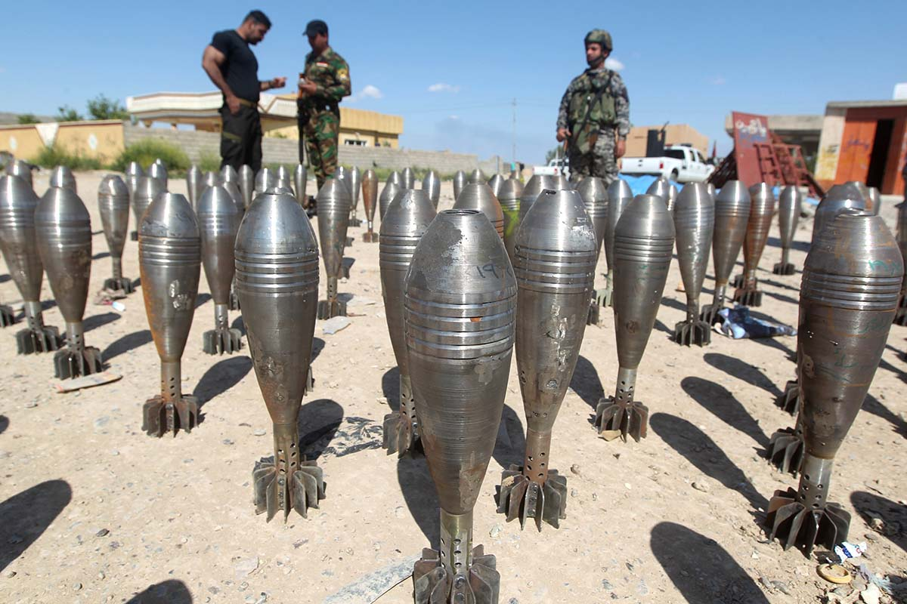
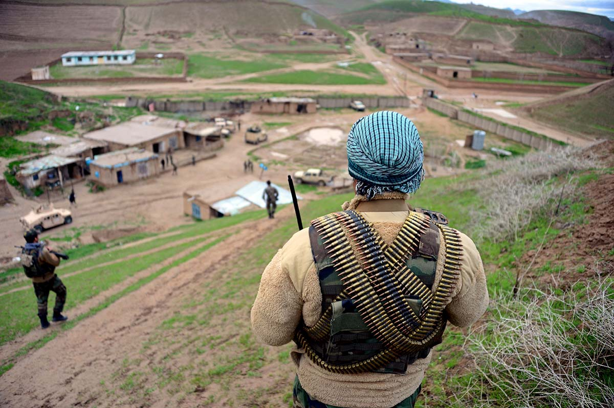

The mobilization of foreign fighters to the Islamic State was an evolution of past jihads that embodied important thematic shifts. Recruitment and jihad through the media moved decisively from traditional media to the internet, democratizing recruitment and expanding the pool of potential fighters. Demographically, the fighters in Iraq and Syria represented a new generation that, for the first time, included the mobilization of Muslim women. The sheer numbers of individuals recruited by the Islamic State demonstrate a fundamental change in the scope and nature of the conflict, as does the role of, and focus on, governance in the legitimacy of the movement. The focus on governance also profoundly shifted the insurgent group’s funding sources and its ability to expand.
The scope and the enormous success of recruitment by the Islamic State represented the largest shift from previous conflicts. Whereas Afghanistan in the 1980s attracted thousands of fighters, they came almost exclusively from the Gulf states, North and East Africa, and Central Asia; in contrast, the Islamic State recruited heavily in Europe and North America. Globally, more than 120 countries have been represented.1
Social media played a crucial role in attracting foreign fighters to the Islamic State. Sophisticated propaganda portrayed a glamorous life in the caliphate, depicted a heroic fight against the enemy, and captured the imaginations of vulnerable individuals worldwide. Encrypted communications, the ease of connectivity, and instant global reach provided a large base of support. Previous conflicts and foreign fighters faced recruiting limitations due to less sophisticated communications capabilities and the limits of existing social networks.
In Iraq and Syria, social media exponentially expanded the potential pool of recruits. Connecting through various social networks, recruiters could pass information on how to travel to the battle space and what to expect. Although other militant groups, particularly Jabhat al Nusra, also used the internet and social media to great effect, the Islamic State attracted the greatest number of travelers. Through their social media campaigns, the Islamic State advertised (in various languages) a new model of governance in the Middle East, provided a sense of purpose for those who joined, and inspired unprecedented numbers of individuals to mobilize and leave their home countries.
Prior to the declaration of the caliphate in June 2014, the number of foreign fighters estimated to have traveled to Syria and Iraq, had grown to over 12,000 fighters hailing from 81 countries. In their publication Dabiq, the Islamic Stated called on “every Muslim professional who delayed his jihād in the past under the pretense of studying Sharī’ah, medicine, or engineering” to “now make his number one priority to repent and answer the call to hijrah, especially after the establishment of the Khilāfah.”2
Sophisticated propaganda portrayed a glamorous life in the caliphate.
By September 2014, estimates ranged from 13,000–35,000 with a significant number of fighters joining extremist groups, highlighting an upward trend in the numbers going to the battlefield. According to a report by the Soufan Group in December 2015, the rise in foreign fighter flows was not geographically uniform throughout 2014 and 2015. The rate of new recruits remained relatively flat in North America but doubled across Western Europe from June 2014–December 2015. Over the same period, the rate of Russian and Central Asian fighters traveling to theater increased by 300 percent.3
In Afghanistan, Chechnya, and Bosnia, media attention was critical to the recruitment of fighters.4 News coverage spread awareness and catalyzed funding flows through preexisting networks. The spread of information and media remained central to the Islamic State’s strategy. Like previous groups that filmed skirmishes to attract recruits, the Islamic State created sophisticated videos to connect with potential members.
Sophisticated videos glamorized life and combat in the caliphate and legitimized the state by elevating its messaging. Social media platforms like YouTube, Facebook, and Twitter allowed the Islamic State and other militant groups to craft their own message, free from the constraints of traditional news coverage. The direct link between the organization and its supporters allowed for more targeted recruitment of foreign fighters, as well as fundraising and public justifications of ISIS’s actions. However, the high production value of the videos and other media, and their dissemination via online social networks, represent technological innovations on preexisting models rather than an entirely new idea.
Motivations for travel to the Islamic State, and roles volunteers played once in theater, depended on the country of origin and shifted with the evolution of the proto-state. After the emergence of the Islamic State, individuals traveling to join the group believed themselves to be engaged in a state-building enterprise and many came to begin anew. Unlike internal (nonforeign) fighters, many of whom were radicalized in prisons or joined for motives of revenge or status, foreign fighters more often sought to defend other Sunnis or to satisfy other identity-centric motivations.
Motivations for travel varied significantly between those living in Western Europe and the Arab world. More European fighters felt disillusionment with the West, as well as a desire to build a new state.5 Volunteers from majority-Arab countries were more likely to be motivated by a desire to protect fellow Sunnis even after the rise of the Islamic State. In contrast, the mobilization of thousands of European residents who moved away from relatively safe and comfortable lives to live in a new Islamist proto-state is a fundamental change from prior conflicts. The Western origins of many fighters also point to the generational shift—a large proportion of the fighters were young people who had not previously participated in any salafist jihad. Another critical evolution is the phenomenon of “jihadi brides.”6 Although women had previously held positions of influence, particularly privately, within jihadi-salafi movements, never before had a large cohort of Western women left the comforts of home to join the battle.
Shifting motivations among foreign fighters reflect changes in Islamic State messaging and operational performance in theater. Steven Metz’s typologies of insurgents illustrate the psychological evolutions of foreign fighters who chose to take up arms.7 Consistent with other insurgencies, initial recruits tended to be “aggrieved” or “idealists,” many of whom were experienced fighters with prior jihadist connections or members of an ideologically committed new generation.
As the Islamic State developed, it, and the networks feeding it, attracted individuals who could be categorized as the “ambitious,” the “lost,” or the “thugs.” Criminal networks in Europe played a major role in facilitating the movement of fighters to and from the battle space.8 After 2016, consistent with Metz’s typologies, new fighters joining the Islamic State were “survivors” for whom membership in the Islamic State was simply safer than nonmembership.
Though a preponderance of fighters came from the Arab world, a significant proportion came from Europe or from Russian-speaking Muslim communities. Many foreign fighters from Western Europe were, like the Afghan Arabs two decades earlier, inexperienced and their military effectiveness was initially minimal. However, they acted as force multipliers for the Islamic State playing the roles of recruiters, jailers, administrators, and other governance positions.
Belgian and Dutch foreign fighters tended to seek fighting positions on the front lines.9 Other roles available to recruits included support activities – working as engineers, hackers, doctors, cooks, drivers, or religious police. Many Russian-speaking militants took on leadership roles because of their education levels and perceived (though not necessarily real) experience fighting against the Russian state.
Individual foreign fighters took on positions of importance within the Islamic State. Omar Shishani, previously the leader of Jaish al Muhajireen wal Ansar, became known as the emir of war for the Islamic State and was credited with planning successful, territory-expanding operations. Another Islamic State foreign fighter, Mohammed Emwazi, also known as “Jihadi John,” rose to prominence after appearing in graphic execution videos. Emwazi was not a commander in the Islamic State and instead worked as a jailer and executioner of American, British, and Japanese hostages as well as Syrian soldiers. His London accent drew global attention to the role of foreign fighters in the Islamic State.
Female foreign fighters in particular took on unique roles within the Islamic State. The Islamic State used female-only recruitment strategies and promoted the idea of finding love and marriage in the caliphate.10 Women as young as 13 left their homes in search of belonging and identity, many with romanticized ideas of marriage to jihadi husbands and living a virtuous life among like-minded peers. In the United Kingdom, a conservative Islamic counterculture emerged among teens in which “Islam is punk rock. The head scarf is liberating. Beards are sexy.”11 Once inside the organization, a marriage bureau (formerly run by Baghdadi’s third wife) and all-female morality militia ruled the lives of the caliphate’s jihadi brides.12
The Islamic State highlighted the participation of foreign fighters in propaganda in what Dara Conduit and Ben Rich describe as the “dual roles of executioner and demagogue.”13 Foreign fighters played major roles in some of the Islamic State’s more egregious actions such as the detention and torture of Kurdish child hostages in 2014 and the genocide of the Yazidi minority in Iraq.
Jabhat al Nusra downplayed the active roles played by foreign fighters and the significant portion of its leadership originating from outside Syria and Iraq.
In contrast, Jabhat al Nusra downplayed the active roles played by foreign fighters and the significant portion of its leadership originating from outside Syria and Iraq. Instead, Jabhat al Nusra focused on the long-game in Syria by building support within Syria’s nationalist opposition to become an integral part of the revolution rather than a supranational jihad, creating popular support networks that will far outlast Syria’s civil war.14
Much of Islamic State media has focused on its existence as a proto-state. The group derived legitimacy and credibility from the declaration of the caliphate, Baghdadi’s assumption of the title of emir al mu’minin, and the successful administration of populations and territory. The declaration of the state was necessary for the group’s success because of the apocalyptic ideology upon which it is based. Without territory to govern, the group would lose its raison d’être: being the army of black flags foretold in end-times prophecies.15 Though traditional media attention remains relevant, scholars such as Bruce Hoffman argue that sanctuary now functions as the oxygen for terrorism.16
The use of the caliphate as a recruitment tool was far more effective for the Islamic State than for previous iterations of foreign fighters. However, the Islamic State was not the first modern organization to declare a caliphate to support their organizational goals. While the Islamic State went much farther in its administration and could symbolically raze a section of the Iraqi-Syrian border, the concept of the caliphate and the “leader of the faithful” was previously used in Taliban-ruled Afghanistan.
Similar to the Taliban before it, the Islamic State’s administration of territory allowed the group to generate profits through taxation and extortion. Other groups like Jabhat al Nusra maintained their reliance on more traditional patronage networks.17 The Islamic State’s self-financing allowed it more independence in targeting and operations, but the associated financial infrastructure increased its vulnerability to targeting.18 As it loses territory, the Islamic State may be forced to raise revenue elsewhere, potentially through the group’s network of criminal actors.19
The scope, scale, and wide cross-section of fighters’ experience and motivations allowed for unprecedented growth in military effectiveness. Whereas in Afghanistan in the 1980s many Afghan Arabs came into direct conflict with local fighters and had an only marginal military impact, the Islamic State’s recruits successfully filled roles in Iraq and Syria that ran the full gamut of military and civilian positions. However, despite continuous adaptations and evolutions of the supranational jihadist movement, core parallels remain.
The conflicts in Bosnia, Chechnya, Afghanistan, and Iraq reveal a common pattern. Conflicts drawing large numbers of foreign fighters generally begin with a humanitarian crisis or civil war in which an aggressor commits atrocities against a Muslim population. The humanitarian disaster attracts volunteers who see an obligation for devout Muslims to defend their Muslim brothers. These volunteers seek to defend their brothers and sisters against a group they perceive as the infidels—whether Shia, Western governments, or oppressive local regimes.
These fighters initially struggle to attain credibility in the battle space but over time, military success, external support, and alliances with local organizations tend to earn groups eventual acceptance. With their presence, the foreign volunteers place the conflict in a global context and often sharpen its sectarian nature. The infusion of international attention and manpower inevitably affects operational realities on the ground, the values of the organizations the foreigners join, and shifts the conflict from national to supranational.
The post-Arab Spring foreign fighter phenomenon seen in Iraq and Syria is not new. Before the Arab Spring, varying numbers of foreign fighters traveled to Afghanistan, Bosnia, and Chechnya. They not only exacerbated those conflicts but built relationships and learned skills they would bring to bear in coming campaigns.
Next Section: Tunisia